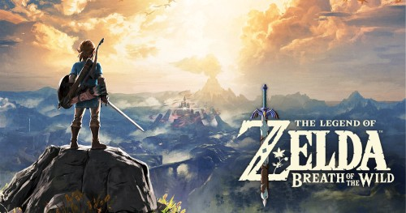
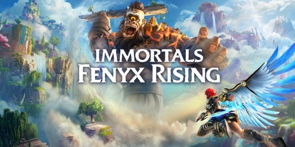

- The Legend of Zelda: Breath of the Wild
-
is a 2017 action-adventure game developed and published by Nintendo
for the Nintendo Switch and Wii U consoles. The game is an installment
of The Legend of Zelda series and is set at the end of its timeline.
The player controls an amnesiac Link, who awakens from a hundred-year
slumber, and attempts to regain his memories and prevent the
destruction of Hyrule by Calamity Ganon.

- The Witcher 3
-
is a series of fantasy action role-playing games developed by CD
Projekt Red and published by CD Projekt. It is based on the book
series of the same name by Polish writer Andrzej Sapkowski, acting as
sequels to the story of the books.
- Immortals Fenyx Rising
-
(originally known as Gods and Monsters) is an action-adventure video
game developed by Ubisoft Quebec and published by Ubisoft.
The game tells the story, as narrated by Prometheus to Zeus, of Fenyx,
a mortal who in order to rescue Fenyx's brother must stop the evil
Typhon after his escape from the underworld.
